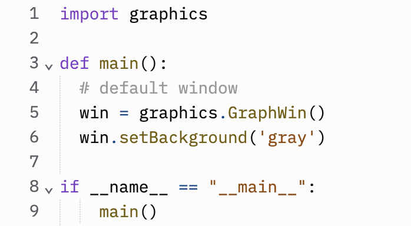
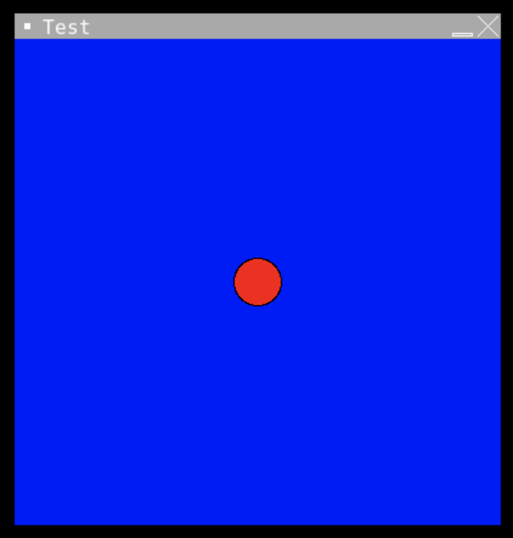

Lecture Notes 26: Graphics in Python
Importing the grahics Module
A Module is Python code that has already been written and that we simply want to use in the current program.
These modules can be written by you or downloaded from some (trusted) source. An example, is the graphycs.py Module.
You can freely obtain it here.
What we will do is work with it in a graphics-example Replit.
The way to let Python know that we "want to use module < this module >" is to do the following:
- the module's code should be written in a file with a .py
extension.
- in the current file you should use the following syntax (imagine we're importing the graphics.py module)
When using this approach, we can acces attributes and methods inside of the module by using ts name and the dot operator...like this:
1
2
3
4
5
6
7 | import graphics
def main():
win = graphics.GraphWin()
if __name__ == "__main__":
main()
|
[2 minutes]:
Try to run the code shown above in an Exercise called graphics-example in Replit.
This creates a default dispay window (the default size is 200 x 200 and the initial coordinates are in the top-left side corner)
namespaces
A namespace is actually just a normal Python dictionary whose keys are the names and whose values are the objects.
A module object is simply a namespace that contains definitions from the module. If the module has already been loaded, then the existing module object is used.
Definitions in the module's code, e.g., variable assignments and function definitions, are placed in the module's namespace. The module is then added to the importing script or module's namespace, so that the importer can access the definitions.
In short,
loading a module using import adds the module's namespace definitions to the current one
Location of modules
The easiest thing to do is to place the modules in the same directory than the file that uses it.
The from syntax
Another way to do it is by using the
from syntax:
using
from adds only the specified names to the global namespace.
A practical example
1
2
3
4
5
6
7 | from graphics import *
def main():
win = GraphWin( )
if __name__ == "__main__":
main()
|
This approach might lead to issues for the case when two modules have a function with the same name.
For this reason, in this course, we will NOT use the
from < module name > import * notation in any projects/homework outside of class
The graphics.py Library
The graphics.py library has several small classes, each with their own methods and inherited properties.
You can define points and lines, draw circles, rectangles, lines, Ovals, Text, and Polygons.
It also lets you do coordinate transformations (that help with displacements or rotations).
Additionally, it can react to mouse and keyboard events (Can you think of somethig you could build with this?)
It is recommended that you consider using it for your final project!
The documentation can be found in graphics.pdf
Comment out or save the current code in another file.
Activity 2 [2 minutes]:
Now, We're going to construct a little scene.
First, write the following lines in main:

This creates a window of default size (200 x 200 pixels), name ('Graphics Window'), and coordinates.
Coordinate system:
Now, let's add a shape
Activity 3 [2 minutes]:
Modify the code to add a circle
Predict where it will appear and its approximate size.
You should see this:

Now, we'll modify the coordinate system
Activity 4 [2 minutes]:
Modify the code to change its coordinates (Change in line 6):

You should see this:

This will make the coordinate system look like this:
Drawing more complex stuff
The following calls allow you to draw lines:
p1 = Point( 0, -100 )
p2 = Point( 0, 100 )
line = Line( p1, p2 )
line.setFill( 'yellow' )
line.draw( win )
The method (inside the appropriate object) to make the line wider is:
You can also set your own colors, like this:
win.setBackground( color_rgb(140, 200, 250) )
If you search in google "rgb color picker", you'll get a handy color picker where you can choose the RGB color values.
You can draw a rectangle with this code:
1
2
3
4
5 | # Draw a rectangle
pbl = Point(-50, -50)
ptr = Point(50, 50)
rec = Rectangle(pbl, ptr)
rec.draw(win)
|
And now, for a greater challenge:
Activity 5 [10 minutes] :
Figure out how to draw this image (or one close to it)

Homework
[Due for everyone]
Remember you have the
Final Project - Prototype I Due on April 7th.
For Project Prototype I you will submit your
minimum viable product. This should include the core functionality to demonstrate the purpose of your project.
Your core functionality should include:
Project's Niche:
- Why is this product usefuln/eeded?
- What would be an ideal long-term goal ( what would it look like for this project to be a success)
- What is your success criteria: what are the minimum things that it should achieve so you say "I did it!"
User's Journey:
- What should it look like/feel like to use your product
- Are there multiple outcomes? What are they?
- Here, a "user-experience" flow diagram would be VERY useful
- Here, a series of mock-ups would be very useful (think of these as intermediate screens encountered by the user as they use your app)
Features and Modules:
- What are the different features/parts/modules in your product
- Which ones are crucial (mission critical) and which ones are perks (good to have but optional)
- Roadmap of what needs to be built, in what order, and by whom
[Optional]